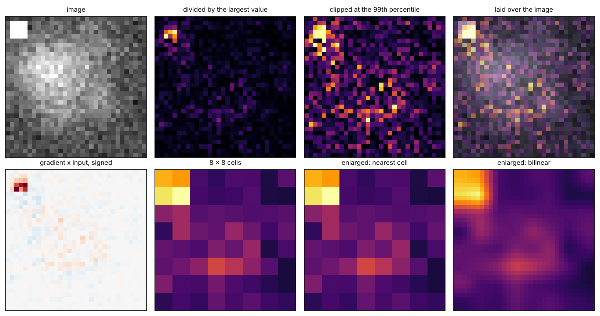
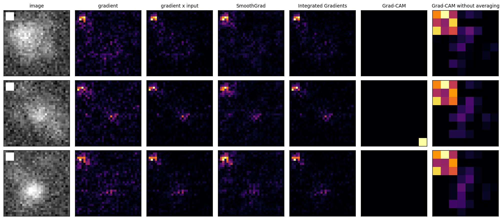
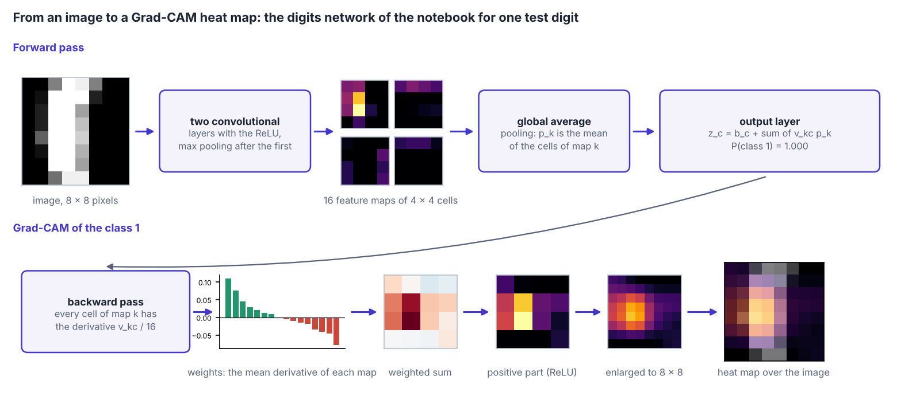
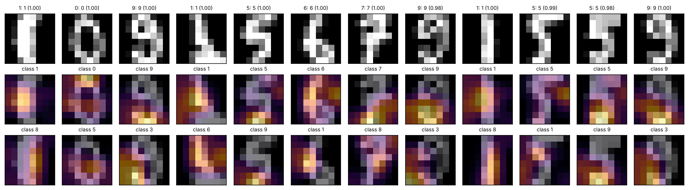
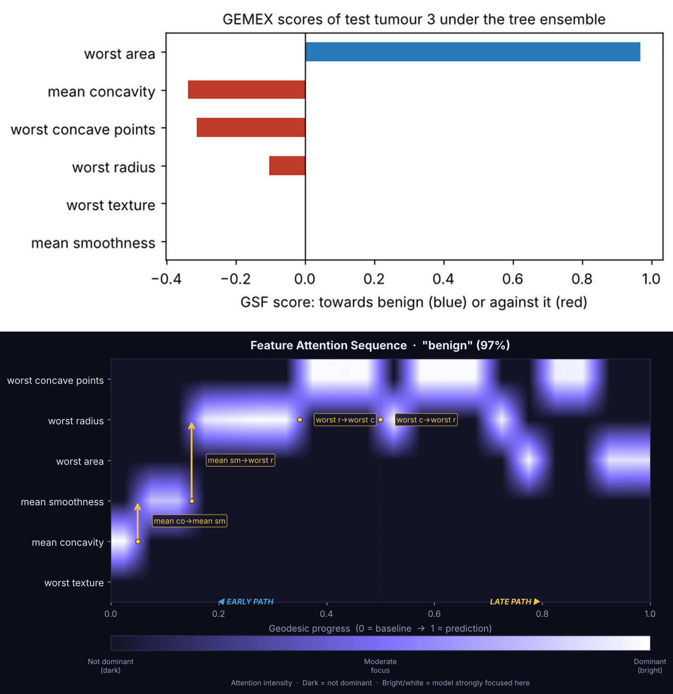
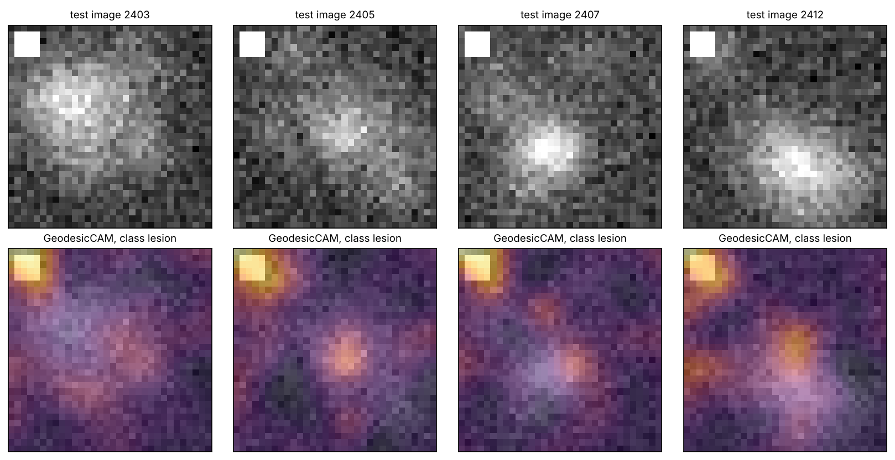
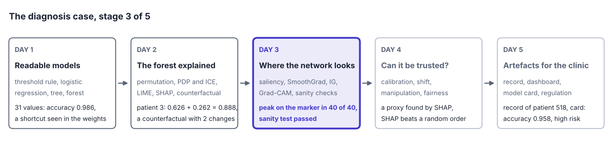
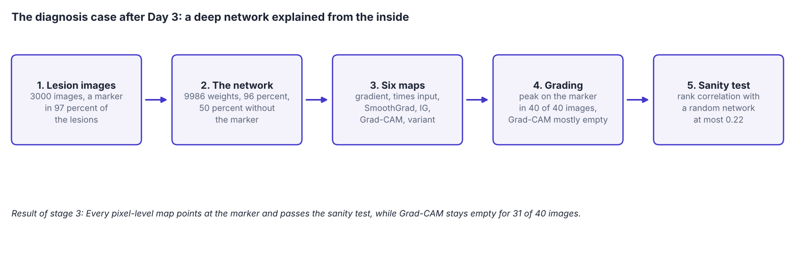
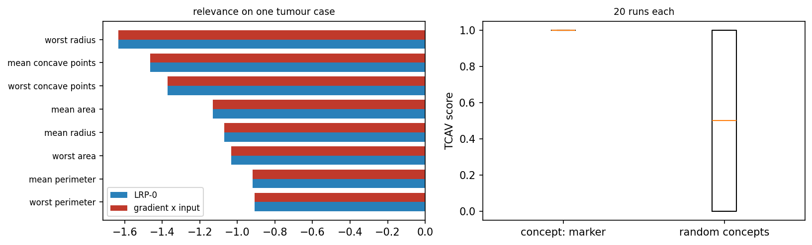

Overview
Deep networks recognise images, sound and text with an accuracy that simpler models rarely reach, and they are the least readable models of all. This day shows how to see where a network looks. It trains a small convolutional network on the lesion images of Day 1, which contain a hidden shortcut, and explains it with saliency maps [1], SmoothGrad [2], Integrated Gradients [3] and Grad-CAM, short for gradient-weighted class activation mapping [4]. It shows how a table of numbers becomes a heat map and follows Grad-CAM step by step inside a network that pools, trained on handwritten digits. Because the true reason for each label is known, the maps can be graded, and a sanity test checks whether they explain the model at all [5]. The day then treats GEMEX, short for Geodesic Entropic Manifold Explainability, an explanation method that follows a path in the geometry of a model and reports how sensitive the prediction is to each feature and which features the path attends to [6], on a tumour model and on the lesion images.
Day at a glance
flowchart LR H["Python step 3"] --> A["Looking inside a network"] A --> B["Saliency: the gradient"] B --> HM["From numbers to a heat map"] HM --> C["SmoothGrad and Integrated Gradients"] C --> D["Grad-CAM"] D --> D2["When averaging fails"] D2 --> E["Are the maps right?"] E --> F["GEMEX"] F --> F2["GEMEX in practice"] F2 --> F3["GEMEX on images"] F3 --> S["The diagnosis case, stage 3"] S --> G["Your field"]
Every method on this page is also written as Python code in the Colab notebook of the day. A Colab notebook is a document of text and Python code that runs in the web browser, with nothing to install. Its code is divided into numbered sections. Each orange box on this page names the section whose code carries out what the text above the box explains. The box says what to run and what to look at in that section, and its button opens the notebook at that place. The practice parts and the self-assessment of the day are in the interactive lab. Each blue box opens one part of the lab. The part ends with a link back to its box on this page, and the notebook is always opened from the orange boxes here.
Python step 3: A neural network as arrays and the chain rule
Python code in the Colab notebook, right after Section 0 (setup). Open the notebook and run this step cell by cell: It consists of short pieces of Python code with their explanations, a quick check and three exercises. Topics: One neuron · The gradient by the chain rule · A two-layer ReLU network · Its gradient, and gradient times input · A layer as an object.
The notebook continues with the hands-on sections. The study path, the daily task and the research assignment are on the day overview.
Looking inside a network
Day 1 built readable models of the diagnosis and met the hidden marker of the lesion images. Day 2 explained the random forest of the tumour data from the outside: Permutation importance and Shapley values ranked the measurements, partial dependence showed how they act, and a local surrogate, Shapley values and a counterfactual explained the prediction of 0.888 for test patient 3.
This day returns to the lesion images, now with a convolutional network, the kind of model that reads images. The network is as accurate as the model of Day 1 and has learned the same marker, so the maps of the day can be graded against a known answer: A map that is right must point at the marker.
A convolutional network turns an image into a prediction through many layers of simple operations. The operations are known, but there are thousands of them, and no person can follow them one by one. The methods of the day use one property instead: A network is differentiable, so for every pixel it can say how much a small change of that pixel would change the prediction. Pixels with a large effect are where the network looks.
For a network, an image is a list of numbers. The images of the day have 32 rows and 32 columns of pixels, and each pixel is one number between 0 for black and 1 for white. An image is therefore an input \(x = (x_1, \ldots, x_d)\) with \(d = 32 \times 32 = 1024\) features, and feature \(j\) is the brightness \(x_j\) of pixel \(j\).
The diagnosis case uses 3000 such images, the lesion images of Day 1. Every image has a noisy grey background with six soft blobs of random size and position. About half of the images also contain a lesion, one more blob near the middle, and carry the label \(y = 1\). The others carry the label \(y = 0\). The lesion is the true reason for the label. It adds to the pixel in row \(r\) and column \(c\) the brightness
Here \(\exp\) is the exponential function, \(r_0\) and \(c_0\) are the row and the column of the centre of the lesion, and \(s\) is its width, between 2.5 and 3.5 pixels. The added brightness is 0.25 at the centre and fades with the distance from it. The background blobs follow the same formula with heights between 0.10 and 0.22 and widths between 2.5 and 6 pixels, so a lesion is hard to tell from the background.
The shortcut of Day 1 is a marker: a white square of 4 by 4 pixels in the top left corner, in rows 1 to 4 and columns 1 to 4 when the count starts at 0. It appears in 97 percent of the images with a lesion and in 3 percent of the others. A shortcut is a cue that predicts the label in the data without being its reason [8]. The first 2400 images are used for training and the other 600 for testing. A second test set of 600 images has the marker in half of the images of both classes, so that the marker carries no information there.
The model of the day is a small convolutional network, written with NumPy, the array library of Python, so that every step can be read, and trained on the lesion images of Day 1. A network is built from layers, and a layer computes a new grid of numbers from the grid that it receives. In a convolutional layer a small window of 3 by 3 positions slides over the input grid, and at every position one unit computes a weighted sum of the values in the window:
Here the \(u_i\) are the input values in the window, the \(w_i\) are the weights, \(b\) is one more adjustable number called the bias, and \(a\) is the result, the activation of the unit. The rectified linear unit, abbreviated ReLU, keeps a positive sum and replaces a negative one by 0. One set of weights that slides over the whole grid is called a filter, and the grid of activations that it produces is a feature map: It shows where in the image the pattern of the filter occurs.
The network has three convolutional layers with 8, 16 and 32 filters. From the second layer on, the window covers its 3 by 3 positions in all feature maps of the layer before. After the first and after the second layer, max pooling keeps the largest value of every block of 2 by 2 cells, which halves the height and the width. The maps therefore shrink from 32 by 32 to 16 by 16 and then to 8 by 8 cells, and the last convolutional layer delivers 32 maps of 8 by 8 cells, 2048 numbers. A dense layer, in which every output is a weighted sum of all inputs plus a bias, turns them into two scores: \(z_0\) for the class no lesion and \(z_1\) for the class lesion. Such raw scores are called logits. The network has 9986 weights and biases in total.
The softmax function turns the logits into probabilities that add up to 1. With two classes, the probability of a lesion depends only on the difference of the two logits:
Here \(\sigma(z) = 1 / (1 + e^{-z})\) is the logistic function of Day 1. The number \(f(x)\) is the log-odds of a lesion: the natural logarithm of the odds \(P / (1 - P)\). It is positive when the network finds a lesion more likely than no lesion. Every method of the day explains this one number. For the first test image \(f(x) = 5.21\), a probability of \(1 / (1 + e^{-5.21})\)\({} = 1 / (1 + 0.0055)\)\({} = 0.995\), and for a completely black image \(f = -0.36\), a probability of \(1 / (1 + e^{0.36})\)\({} = 1 / (1 + 1.433)\)\({} = 1 / 2.433\)\({} = 0.41\).
Training starts from random weights and changes them in many small steps, so that the correct label of every training image becomes more probable. The quantity that training lowers is the cross-entropy loss. For \(n\) training images \(x^{(i)}\) with the labels \(y^{(i)}\) it is
The natural logarithm \(\ln\) of a probability is 0 when the probability is 1 and far below 0 when the probability is small, so the loss is small when the network gives high probabilities to the correct labels. One pass through the 2400 training images is called an epoch. During training the loss falls from 0.43 in the first epoch to 0.11 in the eighth and last one.
Accuracy is the share of images that receive the correct label. The network reaches 96 percent accuracy on test images of the same kind, \(577 / 600 = 0.962\), and falls to about 50 percent, \(299 / 600 = 0.498\), when the corner marker carries no information. On both test sets it predicts a lesion for exactly those images that show the marker. The network has learned the shortcut, and the maps of the day should reveal it.
Python code in the Colab notebook, Section 1. Open Section 1 of the Colab notebook and run it. The function make_lesion_images_meta draws the 3000 images, small_cnn builds the network from the layers Conv, ReLU, MaxPool and Dense, and train_classifier trains it in about half a minute. The cell prints the loss of every epoch and the accuracy with and without the shortcut.
Differentiable means that the output changes smoothly with every input, so that the effect of a small change can be described by a slope. The slope of \(f\) with respect to one pixel, with all other pixels held fixed, is the partial derivative \(\partial f / \partial x_j\), written with the rounded letter \(\partial\). The list of the partial derivatives for all pixels is the gradient of \(f\) at the image \(x\). It predicts the output for a slightly changed image, in which every pixel \(j\) has moved by a small amount \(\Delta x_j\):
The sign \(\approx\) reads is approximately. Close to the image \(x\), the network therefore behaves like the logistic regression of Day 1: a weighted sum of the inputs, with the partial derivatives as the weights. This is why the gradient is an explanation. A pixel with a large positive derivative raises the output when it becomes brighter, a pixel with a negative derivative lowers it, and a pixel with a derivative near 0 has no influence. These weights belong to one image: Another image has another gradient, so the explanation is local in the sense of Day 1.
The gradient is computed by one backward pass, also called backpropagation: The chain rule of calculus is applied layer by layer, from the output back to the input. Training uses the same pass to find out how the loss reacts to every weight, and an explanation continues it down to the pixels.
A model of three pixels has the output \(f(x)\)\({} = 4\, \mathrm{ReLU}(x_1 - 0.5)\)\({} - 2 x_2\)\({} + 0.5 x_3\). For the image \(x = (0.9, 0.3, 0.6)\) the ReLU returns \(\mathrm{ReLU}(0.9 - 0.5)\)\({} = \mathrm{ReLU}(0.4)\)\({} = 0.4\), and the output is \(4 \times 0.4\)\({} - 2 \times 0.3\)\({} + 0.5 \times 0.6\)\({} = 1.6 - 0.6 + 0.3\)\({} = 1.3\). The ReLU is active, because \(0.9 - 0.5\) is positive, so the three partial derivatives are 4, \(-2\) and 0.5. As a check, raise the first pixel by 0.01: The output becomes \(4 \times 0.41 - 0.6 + 0.3\)\({} = 1.64 - 0.6 + 0.3\)\({} = 1.34\), a change of \(1.34 - 1.3 = 0.04\), which is \(4 \times 0.01\).
For the darker image \(x = (0.2, 0.3, 0.6)\) the ReLU is inactive, \(\mathrm{ReLU}(0.2 - 0.5)\)\({} = \mathrm{ReLU}(-0.3)\)\({} = 0\), the output is \(4 \times 0 - 0.6 + 0.3 = -0.3\), and the derivative with respect to the first pixel is 0. The same pixel has a different derivative in a different image.
A sound engineer who wants to know which of fifty knobs changes the sound can turn each one a little and listen. A gradient does this for every pixel at once. The answer holds for the present setting: A knob that changes nothing now, because its channel is muted, may matter a lot once the channel is open, just as the first pixel of the example matters only while the ReLU is active.
Check your understanding. Why does a network allow explanations based on gradients?
Saliency: following the gradient
A saliency map shows the size of the gradient of the prediction for every pixel [1]:
The absolute value lets a pixel count whether a brighter value would raise the output or lower it. It is fast, one backward pass per image, and easy to read as a heat map: an image of the same size in which a larger value is drawn in a brighter colour. For the first image of the worked example the saliency values are \(|4| = 4\), \(|-2| = 2\) and \(|0.5| = 0.5\).
A second map multiplies every derivative by the value of its pixel and is called gradient times input [9]:
Here \(\phi_j\) is the contribution, also called the attribution, that an explanation gives to feature \(j\). For a model that is a weighted sum, \(f(x) = b + w_1 x_1 + \cdots + w_d x_d\), the derivative with respect to \(x_j\) is the weight \(w_j\), and gradient times input is \(w_j x_j\), the contribution of a measurement to the logistic regression of Day 1. In the worked example the three values are \(0.9 \times 4 = 3.6\), \(0.3 \times (-2) = -0.6\) and \(0.6 \times 0.5 = 0.3\). A black pixel, \(x_j = 0\), always receives 0, whatever its derivative is.
Interactive lab, Part A. The formulas of this section and of the previous one solved step by step with numbers for the three-pixel model of the worked example: the output, the derivatives, a finite difference across or beside the kink of the ReLU, saliency and gradient times input, with sliders for the three pixels and the step of the check.
On the lesion images the brightest pixels sit on the corner marker, exactly where the shortcut is. In each of four test images, the largest value of the saliency map lies inside the marker, and only a weak trace appears near the lesion. Part B of the interactive lab also shows two images without a marker whose largest values lie in the same corner: The network checks this place in every image. Raw gradients are noisy, however: Neighbouring pixels can receive very different values, and the map can change a lot for tiny changes of the image.
From numbers to a heat map
A map of the day is a table of numbers: one number for every pixel, or for every cell of a layer. A heat map turns the table into a picture in four steps. The numbers are brought to a common scale, each value receives a colour, the colours are laid over the image, and a coarse map is enlarged to the size of the image. Each step is a choice that changes what a reader sees, so a heat map in a report should state how it was drawn.
The first step divides every value by the largest one, so that the values run from 0 to 1. For a map with the values \(\phi_j\), the normalised value of pixel \(j\) is
A single extreme value then sets the scale for all others. Clipping at a percentile avoids this. The 99th percentile \(q\) of the absolute values is the value that 99 percent of the pixels do not exceed, and every value above it is drawn like \(q\):
For the first test image, the largest saliency value is 1.591 and lies on the marker, while the 99th percentile is 0.500. Divided by the largest value, only 6 of the 1024 pixels reach half of the scale, and the map shows the marker and little else. Clipped at the percentile, 74 pixels reach half of the scale, and the weaker pattern around the lesion becomes visible. A map with signs, such as gradient times input, keeps the sign, \(n_j = \phi_j / \max_k |\phi_k|\), and its values run from \(-1\) to 1.
The second step gives every value a colour from a colour scale. A sequential scale, such as the scale from black through red and yellow to white in the figures of the day, suits values from 0 to 1: The brighter the colour, the larger the value. A diverging scale suits values with a sign: blue for negative values, white for 0 and red for positive ones.
The third step lays the coloured map over the image. With the opacity \(a\) between 0 and 1, the grey level \(g_j\) of pixel \(j\) and the colour \(h(n_j)\) that the scale gives to its value, the displayed colour is
The formula is applied to the red, the green and the blue part of the colour. With \(a = 0\) only the image is visible, and with \(a = 1\) only the map.
The fourth step enlarges a coarse map. A Grad-CAM map of the day has 8 by 8 cells for an image of 32 by 32 pixels, so every cell has to cover 4 by 4 pixels. Copying the value of a cell into all of its pixels, the nearest-cell method, gives sharp steps at the borders of the cells. Bilinear interpolation instead mixes the two nearest cell centres along each axis. Along one axis, pixel \(u\), counted from 0, of a map enlarged by the factor \(s\) lies at the position \(t\), measured in cells. With \(i\) the whole part of \(t\) and \(\lambda = t - i\) its fraction, the value of the pixel is
Positions before the first cell centre or after the last one are moved to that centre. For an image, the rule is applied along the rows and then along the columns. A bilinear map looks smoother, but the smoothness is drawn, not measured: Both methods show the same 64 numbers.

A coarse map has the four cells 0, 3, 6 and 1.5, row by row. Divided by the largest value 6, the cells become 0, 0.5, 1 and 0.25. On the grey scale, 0 is black and 1 white. Laid over an image pixel with the grey level 0.4 at the opacity \(a = 0.5\), the third cell gives the grey level \((1 - 0.5) \times 0.4 + 0.5 \times 1\)\({} = 0.2 + 0.5\)\({} = 0.7\).
Enlarged by the factor \(s = 2\) to 4 by 4 pixels, the first row of cells, 0 and 0.5, becomes four pixels. The nearest cell gives 0, 0, 0.5 and 0.5. With bilinear interpolation, pixel \(u = 1\) lies at \(t\)\({} = (1 + 0.5) / 2 - 0.5\)\({} = 0.25\), so \(i = 0\) and \(\lambda = 0.25\), and it receives \((1 - 0.25) \times 0\)\({} + 0.25 \times 0.5\)\({} = 0.125\). Pixel \(u = 2\) lies at \(t = 0.75\) and receives \(0.25 \times 0 + 0.75 \times 0.5\)\({} = 0.375\). Pixels 0 and 3 lie at \(t = -0.25\) and \(t = 1.25\), which move to the centres 0 and 1, so they keep 0 and 0.5. The row becomes 0, 0.125, 0.375 and 0.5.
A thermal camera measures a temperature for every point of a house and shows the numbers as colours. One hot chimney can take the whole colour scale, so that the leaks around the windows, a few degrees warmer than the wall, stay dark. Setting the scale to the temperatures of the wall makes the leaks visible, although no number has changed. The heat maps of a network behave in the same way.
Animation. From numbers to colours: a thermal image of a house on a winter night and three maps of the network for the first test image. Choose the map, the scale of the values, the colour scale, the opacity and the enlargement, and point at the picture to read the number behind a colour.
The thermal image holds 1200 temperatures between −8.6 °C in the sky and 45.3 °C at the top of the chimney. On the full range, the wall at about 4 °C lies at 0.23 of the scale and the leaking window frames at about 11 °C at 0.36: Both look dark, and only the 6 points of the hot exhaust reach half of the scale. Clipped at the 1st and the 99th percentile, the scale runs from −8.3 to 11.5 °C, the wall moves to 0.62 and the frames to 0.97, and the leaks around the windows and above the door stand out. The three maps of the network show the same effect, with the marker in the role of the chimney.
Interactive lab, Part B. The four steps of this section applied to the maps of six methods for real test images of the network of the notebook, for the trained network and for a network with random weights: the scale of the values, the colour scale, the overlay with its opacity and, for the Grad-CAM maps, the enlargement of the cells.
Python code in the Colab notebook, Section 2. Open Section 2 of the Colab notebook and run it. The first cell calls input_gradient(cnn, x), a function of Section 1 that returns the slope of the output with respect to every pixel, and np.abs turns the slope into the saliency map; it draws four test images next to their maps. The second cell draws one map in the four steps of this section: n_max and n_clip are the two normalisations, overlay lays the colours over the image with the opacity alpha, and upsample_bilinear enlarges a coarse map with the rule of bilinear interpolation.
Check your understanding. A set of maps is drawn after each map was divided by its own largest value. What can no longer be read from the pictures?
Better maps: SmoothGrad and Integrated Gradients
SmoothGrad averages the gradients of many noisy copies of an image, which removes part of the noise [2]. A noisy copy, written \(\tilde{x}^{(i)}\) with a tilde, is the image plus one random number for every pixel, drawn from a normal distribution with the mean 0. With \(n\) copies, the SmoothGrad value of pixel \(j\) is
The maps of the day use \(n = 25\) copies. The standard deviation of the noise is 0.15 times the difference between the brightest and the darkest pixel of the image, about 0.14 for an image with a marker. A derivative that reflects what the network has learned keeps its sign in most copies, while a derivative that is an accident of one exact image changes its sign and cancels.
With four noisy copies, the derivatives of one pixel are 0.9, 0.5, 0.7 and 0.3, and those of a second pixel are 0.8, \(-0.9\), 0.5 and \(-0.6\). In the first copy alone, the two pixels look almost equally important. The averages are \((0.9 + 0.5 + 0.7 + 0.3) / 4\)\({} = 2.4 / 4\)\({} = 0.6\) and \((0.8 - 0.9 + 0.5 - 0.6) / 4\)\({} = -0.2 / 4\)\({} = -0.05\): The first pixel stays, and the second one fades.
A photo taken at night with a shaky hand is grainy, and a phone in night mode takes several quick shots and combines them. What is in every shot stays, and the grain of each single shot averages away. SmoothGrad does the same with the maps of noisy copies of an image.
On the lesion images, the SmoothGrad maps put 16 percent of their total on the marker, against 10 percent for the plain gradient. The section on grading defines this share.
Integrated Gradients, abbreviated IG, follows a path from a plain baseline image, for example a black one, to the real image and adds up the gradients along the way [3]. The baseline is written \(x'\) and stands for an image without any evidence. The points of the straight path are \(x' + \alpha (x - x')\), where \(\alpha\) runs from 0 at the baseline to 1 at the image. The contribution of pixel \(j\) is the average derivative along the path, multiplied by the distance that the pixel travels:
The integral sign \(\int\) stands for a sum over infinitely many small steps, here the average of the derivative over all positions \(\alpha\) between 0 and 1. A computer replaces it by the average over \(m\) points of the path, here the midpoints of \(m\) equal pieces of the path:
The maps of the day use the black baseline, \(x' = 0\), and \(m = 32\) points, so one map costs 32 backward passes instead of one. The contributions of Integrated Gradients add up to the difference between the prediction for the image and for the baseline, a property called completeness:
Completeness holds exactly for the integral and approximately for the average over \(m\) points. For the first test image, \(f(x) = 5.205\) and \(f(x') = -0.359\), a difference of \(5.205 - (-0.359)\)\({} = 5.564\), and the 1024 contributions computed with \(m = 64\) add up to 5.560. The contributions have signs: The 16 pixels of the marker receive \(+11.5\) in total and all other pixels together \(-6.0\). The marker alone would push the output far higher, and the rest of the image pulls it back. The maps of the day show absolute values.
This matters when a network is saturated: Near a confident prediction the gradient is almost zero, while the path collects the effect from where the network was still sensitive, as the animation shows. Saturated means that the output has reached a level at which more evidence no longer changes it, like a probability that is already close to 1. Saliency and gradient times input then report that no pixel matters.
A model of two pixels has the output \(f(x) = \min(3,\, 4 x_1 + 2 x_2)\): It grows with both pixels and stops at 3. For the image \(x = (1, 1)\) the sum is 6, so \(f(x) = 3\), and a small change of a pixel changes nothing. The gradient is \((0, 0)\), and saliency and gradient times input give both pixels the value 0.
Integrated Gradients starts from the black baseline \(x' = (0, 0)\) with \(f(x') = 0\). With \(m = 4\), the positions are \(\alpha_k = (k - 0.5) / 4\), that is 0.125, 0.375, 0.625 and 0.875. On the path both pixels equal \(\alpha\), so the sum \(4 x_1 + 2 x_2\) is \(6 \alpha\): 0.75, 2.25, 3.75 and 5.25. At the first two points the model is not yet saturated and the gradient is \((4, 2)\), and at the last two it is \((0, 0)\). The average gradient is \(((4 + 4 + 0 + 0) / 4,\)\(\, (2 + 2 + 0 + 0) / 4)\)\({} = (2, 1)\), so the contributions are \((1 - 0) \times 2 = 2\) and \((1 - 0) \times 1 = 1\). They add up to \(2 + 1 = 3\), which is \(f(x) - f(x') = 3 - 0\).
Interactive lab, Part C. The formulas of Integrated Gradients solved step by step with numbers for the saturated model of the worked example: the path, the average gradient, the contributions and the check of completeness, with sliders for the two pixels, the cap and the number of points.
Once a glass is full, a little more water changes nothing, and yet the water that filled it is the reason it is full. Asking only what a drop more would do at the brim gives the answer that nothing matters. Integrated Gradients follows the filling from the empty glass and credits every pour on the way.
Animation. A saturating model of eight pixels, \(f(x)\)\({} = \sigma(k\, (w_1 x_1 + \cdots + w_8 x_8) - 1.5)\). Increase the steepness \(k\) and watch gradient times input lose the output while Integrated Gradients keeps adding up to it.
The left panel of the animation plots the output along the path from the black image, at \(\alpha = 0\), to the image, at \(\alpha = 1\): It rises early and then stays flat. The dots are the points at which Integrated Gradients evaluates the gradient. The right panel compares the two contributions of every pixel. With the steepness \(k = 3\) the output difference is 0.812, gradient times input adds up to only 0.038, and Integrated Gradients with 16 points adds up to 0.813. With a single point the sum is 0.796, and with 64 points it is 0.812: More points bring the sum closer to completeness.
On the lesion images the two methods give similar maps, because the explained output is the log-odds, which keep growing where a probability levels off. For the first test image the sum of gradient times input is 5.545, close to the 5.564 of completeness.

Each row of the figure shows one test image on the left, followed by its six maps, in which a brighter colour is a larger absolute value. The four pixel-level maps, gradient, gradient times input, SmoothGrad and Integrated Gradients, have their brightest pixels on the marker in the top left corner, and only a faint group of pixels marks the lesion. The Grad-CAM column is empty for the first and the third image and shows one cell in the bottom right corner for the second. The last column lights a block of cells in the top left corner. The next section explains these two columns.
Python code in the Colab notebook, Section 3. Open Section 3 of the Colab notebook and run it. The functions smoothgrad and integrated_gradients are the two formulas above, and the cell checks completeness by comparing ig.sum() with fx - fb. A slider then shows all methods side by side for any test image.
Check your understanding. What does the completeness of Integrated Gradients guarantee?
Check your understanding. The contributions of Integrated Gradients for an image add up to 4.1, and the output for the black baseline is \(-0.6\). What is the output for the image?
Class activation maps: Grad-CAM
Grad-CAM works on the last convolutional layer instead of the pixels [4]. A class activation map is a coarse image that shows which places of that layer speak for a class. The figure follows one image through a small network and through the steps of Grad-CAM.

The forward pass ends in \(K\) feature maps of \(H\) by \(W\) cells in the last convolutional layer, 4 by 4 cells in the figure. Let \(A_k(r, c)\) be the activation of map \(k\) in row \(r\) and column \(c\), and \(D_k(r, c)\) the derivative of the output with respect to this activation, which the backward pass delivers on its way to the pixels. Grad-CAM weights each feature map by the average of its gradient, adds the weighted maps and keeps the positive part:
\(\bar{D}_k\) is the mean derivative of map \(k\) over its \(H W\) cells and serves as the weight of the whole map. \(M(r, c)\) is the value of the Grad-CAM map in one cell. The maximum with 0 is the ReLU once more: A cell with a negative sum speaks against the class and is set to 0. For display, the map is enlarged to the size of the image with one of the rules of the previous section. The result is coarse, because the last layer has few cells, but it is less noisy than pixel maps and is widely used.
The averaging step fits networks that pool each map before their output, as many modern image networks do. Global average pooling replaces every map by the mean \(p_k\) of its cells, and the output is a weighted sum of these means, with the weights \(v_k\) and a bias \(b\):
In such a network every cell of map \(k\) has the same derivative, \(D_k(r, c) = v_k / (H W)\), so the average loses nothing: The weight of a map is its output weight divided by the number of its cells. The weighted sum before the maximum then adds up to the output minus the bias, \(\sum_{r} \sum_{c} \sum_{k} \bar{D}_k\, A_k(r, c)\)\({} = \sum_{k} v_k\, p_k\)\({} = f(x) - b\), so its cells divide the output among the places of the image. Zhou and colleagues proposed this weighted sum as the class activation map, abbreviated CAM [10], and Grad-CAM extends it to networks of any form [4].
A network ends in two maps of 2 by 2 cells, followed by global average pooling and the output \(f(x) = 0.5 + 2 p_1 - 1 p_2\). Written row by row, map 1 has the activations 3, 1, 0, 1 and map 2 the activations 0, 2, 1, 1. The means are \(p_1\)\({} = (3 + 1 + 0 + 1) / 4\)\({} = 1.25\) and \(p_2 = (0 + 2 + 1 + 1) / 4 = 1\), so \(f(x)\)\({} = 0.5 + 2 \times 1.25 - 1 \times 1\)\({} = 2\).
Every cell of map 1 has the derivative \(2 / 4 = 0.5\) and every cell of map 2 the derivative \(-1 / 4 = -0.25\), so the weights are \(\bar{D}_1 = 0.5\) and \(\bar{D}_2 = -0.25\). The weighted sums of the four cells are \(0.5 \times 3 - 0.25 \times 0 = 1.5\), \(0.5 \times 1 - 0.25 \times 2 = 0\), \(0.5 \times 0 - 0.25 \times 1\)\({} = -0.25\) and \(0.5 \times 1 - 0.25 \times 1 = 0.25\). They add up to \(1.5 + 0 - 0.25 + 0.25\)\({} = 1.5\), which is \(f(x) - b = 2 - 0.5\). After the maximum with 0 the map is 1.5, 0, 0 and 0.25: The first cell carries most of the score.
Four reporters mark on a city map where their topic happened today: traffic, weather, sport and the markets. The editor decides how much each topic matters for the headline, for example a lot for traffic and against sport. Laying the four marked maps over each other with these weights shows where the story of the headline happened. Grad-CAM does the same with the feature maps and their weights.
Animation. Grad-CAM inside a network: a homework app reads a handwritten plus or times sign. Draw on the grid or choose a drawing, choose the class to explain and press Play the steps to follow the filters, the feature maps, the pooling, the scores, the weights of the maps and the heat map.
The network of the animation has four hand-made filters, one for each stroke: vertical, horizontal and the two diagonals. After the ReLU and max pooling, each filter delivers a map of 6 by 6 cells. For the plus sign, the cells of the vertical and of the horizontal map add up to 5.67 each and those of the two diagonal maps to 0.67 each, so the score of plus is \(6 \times (5.67 + 5.67 - 0.67 - 0.67)\)\({} / 36\)\({} = 6 \times 10 / 36\)\({} = 1.67\) and its probability 0.966. Every cell of a map has the derivative \(\pm 6 / 36 = \pm 0.167\), which is the weight of the map, and the weighted sum lights 7 of the 36 cells, the strokes of the plus. For the times sign the diagonal maps take over: The probability of times is 0.991, and its Grad-CAM map lights 20 cells along the diagonals. A drawing with both strokes is read as times with the probability 0.841, and the two classes light different strokes: 5 cells for plus and 17 for times.
One of the first convolutional networks read the handwritten ZIP codes, the postcodes of the United States, in a database of the United States Postal Service [11]. The digits of the notebook come from a similar task: They were written on printed forms, and every digit was reduced to 8 by 8 pixels whose values count the dark points in blocks of 4 by 4 of the scanned image, from 0 to 16 [12]. The 1797 digits of the notebook were written by 13 people.
The notebook trains a network with global average pooling on these digits, the network of the figure above: two convolutional layers with 16 filters each, max pooling after the first one, global average pooling and a dense layer for the ten classes, 2650 weights and biases in total. Trained for 40 epochs on 1347 digits, it labels 437 of the 450 test digits correctly, an accuracy of \(437 / 450 = 0.971\). For the first test digit, a 1 read with the probability 1.000, every cell of a map has the same derivative, the weights of the 16 maps equal their output weights divided by 16, and the weighted sum adds up to 16.801, the score minus its bias. Grad-CAM keeps 12 of the 16 cells.

Each column of the figure shows one test digit: at the top with its true class, its predicted class and the probability, in the middle with the Grad-CAM map of the predicted class and at the bottom with the map of the second most probable class. The two maps of a digit light different places. For a 9, the map of the class 9 is bright on the tail at the bottom, and the map of the class 3 on the left edge of the digit.
Interactive lab, Part D. The formulas of this section applied inside the digits network of the notebook: the 16 feature maps of a digit, the weight of every map, the weighted sum, its positive part, the enlargement and the overlay, for a test digit or a digit drawn by hand and for any of the ten classes; then Grad-CAM by hand for two maps of 3 by 3 cells, checked cell by cell.
Python code in the Colab notebook, Section 4. Open Section 4 of the Colab notebook and run it. The class GlobalAvgPool is the pooling of this section, and dnet is the network of the digits. The function digit_cam follows the formulas: dA.mean(axis=(1, 2)) is the weight of each map, (alpha[:, None, None] * A).sum(0) the weighted sum and np.maximum(0, S) its positive part. The cell checks that every cell of a map has the same derivative and that the weighted sum adds up to the score minus its bias, and the next cell draws Grad-CAM for twelve test digits and two classes each.
Check your understanding. In a network with global average pooling, what is the Grad-CAM weight of a feature map?
When averaging fails: a network without pooling
The network of the day has no pooling before its output. Its dense layer gives every cell of every map a weight of its own, \(W_k(r, c)\), the difference of the weights of the cell for the two logits. The last layer has \(K = 32\) maps of 8 by 8 cells:
The derivative of a cell is then its weight, \(D_k(r, c) = W_k(r, c)\), the same for every image. The place of the marker is stored in exactly this pattern of weights, and the average over the 64 cells erases it. In the trained network 20 of the 32 mean derivatives are negative, and Grad-CAM returns empty maps for most images: For 31 of 40 test images the weighted sum is negative in every cell. In the other nine a single cell of the bottom row remains, far from the marker and from the lesion. A variant that keeps the cells apart finds the marker every time. It multiplies derivative and activation cell by cell before it adds the maps:
In the network of the day, the sum inside the maximum is the exact contribution of the cell to the log-odds: The contributions of the 64 cells and the bias add up to \(f(x)\). For the first test image the nine cells in the top left corner contribute \(+6.9\), and all 64 cells together 5.2. The marker reaches nine cells, because every cell of the last layer depends on a square of 18 by 18 pixels of the image. The animation shows why.
A layer has two maps of 2 by 2 cells. Written row by row, map 1 has the activations 3, 1, 0, 1 and the derivatives 2, \(-1\), \(-1\), \(-1\), and map 2 has the activations 0, 2, 1, 1 and the derivatives 0, \(-1\), 1, \(-2\).
Grad-CAM first averages the derivatives: \(\bar{D}_1\)\({} = (2 - 1 - 1 - 1) / 4\)\({} = -1 / 4\)\({} = -0.25\) and \(\bar{D}_2\)\({} = (0 - 1 + 1 - 2) / 4\)\({} = -2 / 4\)\({} = -0.5\). The weighted sum in the first cell is \(-0.25 \times 3 - 0.5 \times 0\)\({} = -0.75\). In the other three cells it is \(-0.25 \times 1 - 0.5 \times 2\)\({} = -1.25\), \(-0.25 \times 0 - 0.5 \times 1\)\({} = -0.5\) and \(-0.25 \times 1 - 0.5 \times 1\)\({} = -0.75\). All four sums are negative, so the map is empty.
The variant multiplies cell by cell. The first cell gives \(2 \times 3 + 0 \times 0 = 6\), and the other three give \((-1) \times 1 + (-1) \times 2\)\({} = -3\), \((-1) \times 0 + 1 \times 1 = 1\) and \((-1) \times 1 + (-2) \times 1\)\({} = -3\). After the maximum with 0 the map is 6, 0, 1, 0: The first cell, in which map 1 is active and has a positive derivative, stands out.
A weather report that gives only the mean temperature of a day, 20 °C, hides a frosty morning and a hot afternoon. Grad-CAM replaces the 64 derivatives of a map by their mean in the same way. When the network stores its knowledge in where the derivatives are positive, the mean erases exactly that.
Animation. One activation map of 8 by 8 cells, the derivatives that a dense layer sends back to it, and the two ways of combining them. Switch to global average pooling to see when averaging is harmless.
The map of the animation has a bright region in the top left corner and a weaker one near the middle. The dense layer gives the four corner cells a positive weight, 1.0 at the start, and all other cells the weight \(-0.25\). The mean of the 64 derivatives is then \((4 \times 1.0 - 60 \times 0.25) / 64\)\({} = (4 - 15) / 64\)\({} = -11 / 64\)\({} = -0.172\): Grad-CAM multiplies the whole map by a negative number and lights no cell, while the variant lights the four corner cells. The slider cannot make the mean positive, because that would need \(4 w > 60 \times 0.25 = 15\), a corner weight \(w\) above \(15 / 4 = 3.75\). With global average pooling every cell has the same derivative, 0.3 in the animation, and both maps light the same 63 cells.
Python code in the Colab notebook, Section 5. Open Section 5 of the Colab notebook and run it. The function grad_cam stands in the first cell of Section 3: In it, dA.mean(axis=(1, 2)) is the weight of each feature map and np.maximum(0, ...) keeps the positive part. The function grad_cam_no_average, in the same cell, is the variant without the average. The cell of Section 5 draws both for three images and counts the empty maps.
Check your understanding. Grad-CAM returns an empty map for an image. What is a likely reason?
Are the maps right?
A map is useful only if it shows what the model actually uses. Two checks are possible here. First, the true shortcut is known, so the share of each map that falls on the marker can be measured. For a map with the values \(\phi_j\) and a region \(S\) of the image, the share is
The numerator adds the absolute values of the pixels of the region, and the denominator adds those of all pixels. The grading uses two regions. The first is the corner square of 5 by 5 pixels that contains the marker, 25 of the 1024 pixels or 2.4 percent of the image. The second is the disc of radius 5 around the centre of the lesion, 81 pixels or 7.9 percent. A map that is spread evenly over the image gives every region the share of its area. Because the two regions differ in size, the shares are also compared per pixel, with \(|S|\) for the number of pixels of a region:
A ratio above 1 means that a pixel of the marker receives more of the map than a pixel of the lesion. A third measure is the peak, the pixel with the largest absolute value, and the region in which it lies. The table gives the means over 40 test images that have a lesion and the marker.
| Method | Share on the marker | Share on the lesion | Peak on the marker |
|---|---|---|---|
| Gradient | 0.104 | 0.105 | 40 of 40 |
| Gradient times input | 0.196 | 0.139 | 40 of 40 |
| SmoothGrad | 0.161 | 0.094 | 40 of 40 |
| Integrated Gradients | 0.220 | 0.132 | 40 of 40 |
| Grad-CAM | 0.000 | 0.000 | 0 of 9, and 31 maps are empty |
| Grad-CAM without averaging | 0.152 | 0.065 | 40 of 40 |
A map of 100 pixels has a total of 50 when its absolute values are added. A cue of 4 pixels holds 10 of this total and an object of 20 pixels holds 15. The shares are \(10 / 50 = 0.20\) and \(15 / 50 = 0.30\), so the object holds more of the map. Per pixel the order turns around: \(0.20 / 4 = 0.05\) for the cue against \(0.30 / 20 = 0.015\) for the object, a density ratio of \(0.05 / 0.015 = 3.3\).
The first row of the table is such a case. The gradient puts about the same share on the marker and on the lesion, but the marker square is \(81 / 25 = 3.24\) times smaller than the lesion disc, so the density ratio is about 3.2.
Every pixel-level method puts its peak on the marker in every image. The shares on the marker, between 10 and 22 percent, belong to a square that covers 2.4 percent of the image, and per pixel the four pixel-level maps give the marker between 3.2 and 5.5 times as much as the lesion. These are correct explanations of a model that learned the wrong thing, and they are exactly what a reviewer needs to reject it.
A network that screened chest radiographs for pneumonia was trained on images from two hospital systems with very different shares of pneumonia, 34.2 percent in one and 1.2 percent in the other [13]. A second network could tell from the image alone in which hospital system a radiograph had been taken, for 99.95 and 99.98 percent of the test images of the two systems. Its activation maps were strongest in the corners of the images, where a metal token placed by the technicians and the labels of the side of the body differ between hospitals. The screening network reached an AUC, the area under the curve of Day 1, of 0.931 on test images of the same two systems and 0.815 on images of a third hospital. The marker of the lesion images of this course plays the role of such a token.
Second, Adebayo and colleagues proposed a sanity test: A map computed with random weights should look different from the map of the trained network [5]. The test is also called the model-randomisation test. The test builds a second network of the same shape whose weights are random numbers and computes every map for both networks. It compares the two maps of an image by their rank correlation, also called the Spearman correlation. The items, here the pixels, are ranked in each map from the largest absolute value, rank 1, to the smallest. For \(N\) items and the difference \(\delta_i\) between the two ranks of item \(i\), the rank correlation is
The rank correlation \(\rho\) is 1 when both maps rank the items in the same order, close to 0 when the two orders are unrelated and \(-1\) when one order is the reverse of the other. The formula holds when no two items share a value. Items with equal values receive the mean of their ranks, and the usual correlation coefficient of the two lists of ranks is then computed.
Two maps give five pixels the values 0.9, 0.1, 0.4, 0.7, 0.2 and 0.3, 0.2, 0.8, 0.6, 0.1. In the first map the ranks of the five pixels are 1, 5, 3, 2, 4, and in the second map they are 3, 4, 1, 2, 5. The differences are \(-2\), 1, 2, 0 and \(-1\), and their squares add up to \(4 + 1 + 4 + 0 + 1 = 10\). With \(N = 5\), the denominator is \(N (N^2 - 1) = 5 \times 24 = 120\), and the rank correlation is \(1 - 6 \times 10 / 120\)\({} = 1 - 60 / 120\)\({} = 0.5\): The two maps agree in part.
Interactive lab, Part E. The rank correlation solved step by step with numbers for the two maps of the worked example: the ranks, their differences and the correlation, with equal values handled by mean ranks and sliders for the values of the second map.
| Method | Rank correlation between the maps for trained and for random weights |
|---|---|
| Gradient | 0.041 |
| Gradient times input | 0.219 |
| SmoothGrad | 0.037 |
| Integrated Gradients | 0.218 |
| Grad-CAM | \(-0.100\) |
| Grad-CAM without averaging | 0.089 |
The table gives the means over 20 test images, and for Grad-CAM only the few images with a map that is not empty can enter. Plain gradients pass this test, while maps that multiply by the input keep part of the image's shape even with random weights. Gradient times input and Integrated Gradients with a black baseline both contain the factor \(x_j\), so a bright pixel receives a large value under any weights. Their correlation of 0.22 is still low: These maps also depend mostly on the trained weights.
Interactive lab, Part F. The sanity test by eye: maps of the trained network and of a network with random weights, each to be recognised.
A thermometer that shows 37 °C whatever it touches is useless, even though 37 °C is often right. A map that looks the same for a trained network and for a network with random weights is such an instrument: It shows the image and not the model.
A third kind of check, the perturbation test, changes the input instead of the model: It removes the pixels that a map ranks highest and measures how far the output falls [14]. Day 4 applies it as the deletion test, and the optional section of this day uses the same idea for the words of a text.
Scene: Cover a part of the image. The perturbation test by hand: A grey cover of 5 by 5 pixels replaces a part of a lesion image, and the readout gives the prediction of the model with and without it. The model is the logistic regression of the scene of Day 1, trained in this page on images in which a marker in the top left corner came with 97 of 100 lesions. The occlusion map moves the cover over every position and gives every pixel the mean drop of the prediction, a map that needs no gradient.
Python code in the Colab notebook, Section 6. Open Section 6 of the Colab notebook and run it. The function region_masses computes the share of a map on the marker and on the lesion, and the cell prints these shares for every method. It then builds a network with random weights, small_cnn(seed=123), and compares the maps of the two networks with spearmanr.
Check your understanding. A map looks the same for the trained network and for random weights. What follows?
Check your understanding. A map puts 12 percent of its total on a cue that covers 2 percent of the image and 30 percent on an object that covers 10 percent. What is the density ratio of the cue to the object?
Explaining with GEMEX
GEMEX explains a prediction through the geometry of the model [6]. It follows a path from a reference to the case and reports how sensitive the prediction is to each feature along the way and which features the path attends to. It needs only the predicted probabilities: Every derivative that it uses is estimated from the predictions for slightly changed inputs. It therefore explains any model, a tree ensemble without gradients as well as an image classifier treated as a closed box.
The geometry rests on one idea: Two inputs are far apart when the model gives them different probabilities and close when it treats them alike. For a model that returns the probability \(P(y \mid x)\) of every class \(y\), the Fisher information matrix \(G(x)\) collects how strongly the probabilities react to the features. It is a table with one row and one column for every feature, and its entry for the features \(j\) and \(k\) is
The sum runs over the classes. A diagonal entry \(G_{jj}\) is large when a small change of feature \(j\) changes the predicted probabilities strongly, and an entry \(G_{jk}\) for two different features tells whether they move the probabilities together. The table defines the length of a small step \(\Delta x\) that starts at the point \(x\):
A step is long where the model reacts to it and short where the prediction does not change. All steps of length 1 around a point form an ellipse: short in the directions in which the probabilities change fast and long in the directions in which they hardly change. A geodesic is the shortest path between two points when length is measured in this way. GEMEX computes a path of 40 points from the reference, the mean of a set of reference cases, to the case. The path starts in the direction of the straight line and bends where the table \(G\) changes along the way, and its last point is set on the case, which can give it a short turn at the end. The geodesic sensitivity field, abbreviated GSF, then measures for every feature how closely the path runs along it, with directions compared through \(G\). At one point of the path with the direction \(v\), the alignment with feature \(j\) is the cosine of the angle between the two directions, with lengths and angles measured by \(G\):
The value lies between \(-1\) and 1. It is close to 1 when a small change of feature \(j\) changes the probabilities in the same way as the step of the path, close to \(-1\) when it changes them in the opposite way, and close to 0 when the two changes are unrelated. The score of the feature is the weighted average of this alignment over the 40 points, with more weight on the first part of the path when the prediction is confident. It is multiplied by a factor of sensitivity between one third and 3, which is larger for features to which the model is more sensitive. Finally all scores are scaled, so that the largest one equals the difference between the probability for the case and for the reference. A positive sign means that the change of the feature from the reference to the case moved the prediction towards the predicted class, and a negative sign that it worked against it.
The feature attention sequence, abbreviated FAS, records which feature dominates each point of the path. At point \(t\), GEMEX takes the eigenvector \(u(t)\) of \(G(\gamma_t)\) with the largest eigenvalue, the direction in which the model is most sensitive there, after adding a small share of the direction of the path, and names the feature with the largest component:
The dwell time of a feature is the share of the points that it dominates, and a change of the dominant feature from one point to the next is a transition. The features that dominate the first half of the path, near the reference, and the second half, near the case, show the order in which the model attends to them.
For images, GEMEX treats a patch of pixels as one feature: With patches of 4 by 4 pixels, an image of 32 by 32 pixels has 64 features, the mean brightness of each patch, and the path changes these 64 values. GEMEX explains the class with the scores of the patches and draws their absolute values, enlarged bilinearly and smoothed, as a heat map that it calls GeodesicCAM. It needs neither the layers nor the gradients of the network.
GEMEX measures an explanation in the geometry that the model itself defines, the information geometry of its probabilities [6]. One run delivers a score for every feature along the shortest path in this geometry, the length of the path, the order in which the path attends to the features and, for images, heat maps that need only the probabilities of the model. The repository of GEMEX holds examples on medical tables, an electrocardiogram time series and medical images, and it describes further analyses on the same geometry, such as interactions between features and signals for bias traps. The path of 40 points needs many predictions of the model, so the computing time grows with the number of features; for images, the patches keep this number small.
On a flat map of the world, the route of a long flight looks curved, and yet it is the shortest way, because distances on the globe are measured differently from distances on the paper. GEMEX measures distances between inputs by how much the predictions change, so its shortest path from the reference to the case can look curved in the space of the features.
A weather app gives the probabilities of sun, clouds and rain from the air pressure \(x_1\) in hectopascal (hPa) and the humidity \(x_2\) in percent, with the scores \(z_{\text{sun}} = 0.12 (x_1 - 1013)\), \(z_{\text{clouds}} = 0\) and \(z_{\text{rain}}\)\({} = 0.08 (x_2 - 60) - 0.5\) and the softmax function: A high pressure speaks for sun and a high humidity for rain. Today brings 1025 hPa and 40 percent, so \(z = (1.44, 0, -2.10)\) and the probabilities are 0.7899, 0.1872 and 0.0229: sun.
For such scores, the derivative of \(\ln P(y \mid x)\) is the weight of the class minus the average weight, \(\bar{a} = (0.0948, 0.0018)\): \((0.0252, -0.0018)\) for sun, \((-0.0948, -0.0018)\) for clouds and \((-0.0948, 0.0782)\) for rain. The Fisher information matrix has the entries \(G_{11} = 23.898\), \(G_{12} = -1.737\) and \(G_{22} = 1.432\) in units of \(10^{-4}\), and its eigenvalues are \(24.0315\) and \(1.2985\) in the same units: The forecast of today reacts mainly to the pressure, so its ellipse is about four times longer than wide.
The typical day, 1013 hPa and 60 percent, is the reference, with the probability 0.384 for sun. The step to today, \(\Delta x = (12, -20)\), has the length \(\sqrt{4847.87 \times 10^{-4}} = 0.696\) when it is measured with the matrix of today. Its alignments are \(\cos_1 = 0.945\) and \(\cos_2 = -0.594\): A higher pressure changes the probabilities almost as the step does, and a higher humidity changes them partly in the opposite way. Along its geodesic of 40 points, GEMEX gives the pressure the score 0.406 and the humidity 0.147, both towards sun. The largest score is \(0.790 - 0.384 = 0.406\), the change of the probability of sun.
Animation. GEMEX in a weather app: the forecast of sun, clouds or rain from the air pressure and the humidity. Drag today and the typical day over the map and read the ellipses of the Fisher information, the geodesic and the scores.
The ellipses of the animation lie along the borders between the classes: Moving along a border changes the probabilities little, so the steps of length 1 are long in that direction. In the region of sun the ellipses stand upright, because the forecast reacts there mainly to the pressure, and in the region of rain they lie flat, because it reacts mainly to the humidity. For the sunny day, the geodesic stays close to the straight line and has the length 0.951. For the rainy day, 995 hPa and 85 percent, the probability of rain is 0.801, and the scores are 0.568 for the pressure and 0.558 for the humidity, both towards rain: The lower pressure takes probability away from sun, and part of it goes to rain.
Interactive lab, Part G. The formulas of this section solved step by step with numbers for the weather app of the worked example: the probabilities, the derivatives of their logarithms, the Fisher information matrix, its eigenvalues, the length and the alignment of the step from the reference, and the scores along the geodesic, with sliders for today and for the reference.
Check your understanding. GEMEX scales its scores. What does the largest score of an explanation equal?
GEMEX in practice: the tumour model
The diagnosis case applies GEMEX to the breast tumours of Day 1, each diagnosed as malignant or benign [15], with 426 tumours for training and 143 for testing. Six of the thirty measurements are put on a common scale, with the mean 0 and the standard deviation 1 in the training data, as in the examples of GEMEX. A gradient boosting classifier, 100 small decision trees whose outputs are added up, learns the diagnosis from them and classifies 136 of the 143 test tumours correctly. GEMEX explains its prediction for one test tumour, with a path of 20 points and 60 training tumours as the reference cases, in about a second, and the table reads the main parts of the result. The numbers come from version 1.2.2 of GEMEX, and a newer version of the package can give other values.
| Part of the result | Value | How to read it |
|---|---|---|
| Prediction | benign (p=0.974) | The model gives the tumour a probability of 0.974 of being benign, and the explanation refers to this class. |
| Reference | p=0.006 | The mean of the 60 reference tumours has a probability of only 0.006 of being benign, so the path leads from the region of malignant tumours to that of benign ones. |
| Length of the geodesic | 2.9347 | The length of the path from the reference to the case: the sum of the lengths of its 19 steps. |
| Scores (GSF) | worst area \(+0.9674\), mean concavity \(-0.3363\), worst concave points \(-0.3118\), worst radius \(-0.1025\), worst texture \(-0.0004\), mean smoothness \(+0.0002\) | The largest score, 0.9674, is the probability for the case minus the probability for the reference, \(0.974 - 0.006 = 0.968\). A positive score works towards benign and a negative one against it, and a score close to 0 means that the trees hardly react to the measurement along this path. |
The attention sequence changes its dominant feature 9 times along the 20 points. The path dwells on the worst concave points for 40 percent of its points and on the worst radius for 30 percent, and it ends with the worst area near the case. The geodesic gains most of its length in two steps of its first half, 1.038 and 0.947 of the total 2.935, where it crosses from the region of malignant tumours to that of benign ones.

Over 20 test tumours, the largest score goes to the worst area for 7 tumours, to the mean concavity for 6, to the worst radius for 5 and to the worst concave points for 2: A tree ensemble reacts to different measurements in different regions of the data. GEMEX needs about a second per tumour.
Python code in the Colab notebook, Section 7. Open Section 7 of the Colab notebook and run it. scaler6 puts the six measurements on a common scale, gbm6 is the tree ensemble, and gx.explain returns the explanation of test tumour 3, whose scores the cell prints together with the version of GEMEX. The next cells read the attention along the path, draw the scores and the attention sequence, and explain 20 test tumours.
Check your understanding. GEMEX names the dominant feature at every point of its path. What is the dwell time of a feature?
GEMEX on images: the lesion network as a closed box
GEMEX can also explain the convolutional network of the day without looking inside it. The notebook gives it a function that returns the two probabilities of the network for an image whose patch means come from GEMEX and whose details within each patch come from the test image, and it explains the class lesion for four test images with a lesion and the marker. With patches of 4 by 4 pixels each image has 64 features. To keep the computation short, the path has 10 points and the geometry is averaged over 8 neighbouring points and 20 reference images, which takes about 11 seconds per image.

In all four images, the patch with the largest score is the corner patch with the marker. The marker square receives about three times the mean value of the map, between 2.8 and 3.2 times, and the disc of the lesion between 0.9 and 1.5 times. The probabilities that GEMEX reports, between 0.975 and 0.997, are those of the network for the four test images: Through its probabilities alone, the network shows where it looks.
Python code in the Colab notebook, Section 8. Open Section 8 of the Colab notebook and run it. cnn_proba turns the network of Section 1 into a function of probabilities, proba_for prepares it for one test image, cfg_img sets the patches and the short path, and geodesic_cam draws the absolute scores of the patches as a heat map. The cell explains four test images in less than a minute and prints for each one the probability, the patch with the largest score and the values of the map on the marker and on the lesion relative to its mean.
The diagnosis case, stage 3: the network caught looking at the marker
The methods of this day now come together in the third stage of the project. The lesion images of Day 1 receive a convolutional network, six maps explain it, and because the marker is planted on purpose, every map is graded against a known answer and checked against a network with random weights. The first figure shows the stage of the project, the second the audit of the network.


| Question | Answer of stage 3 | Section |
|---|---|---|
| How good is the network, and on what? | 96 percent on images like the training data and 50 percent once the marker carries no information | Looking inside a network |
| Do the contributions add up? | Integrated Gradients: 5.560 against an output difference of 5.564 | Better maps: SmoothGrad and Integrated Gradients |
| Does Grad-CAM help here? | No: 31 of 40 maps are empty, because averaging erases the place of the marker, while the variant without averaging finds it every time | When averaging fails: a network without pooling |
| Where does the network look? | The four pixel-level maps put their peak on the marker in 40 of 40 images | Are the maps right? |
| Do the maps explain the model? | Yes: Their rank correlations with the maps of a random network stay at 0.22 or below | Are the maps right? |
| Which measurements does the tree ensemble react to along the path? | GEMEX gives the worst area the largest score for test tumour 3, and over 20 test tumours four different measurements lead | GEMEX in practice: the tumour model |
| Does an explanation through the probabilities alone find the marker? | GEMEX puts the largest score of its patches on the corner patch in 4 of 4 images | GEMEX on images: the lesion network as a closed box |
The maps found the shortcut and passed the sanity test. They do not say whether the probabilities of a model can be trusted, whether an explanation can be manipulated or whether a model treats groups of people fairly. Day 4 tests these questions on the network, on the tumour data and on a credit model.
Explanations in your field
Hidden shortcuts are not limited to medicine. A date stamp on photographs of cracked concrete, a lighting gradient on images of scratched metal or a ruler next to diseased leaves can all leak the label. The application of the day generates images of five fields with such a cue, trains the network and shows where it looks.
| Field | Defect that defines the class | Cue that leaks the label |
|---|---|---|
| medicine | a bright round spot | a bright marker of 4 by 4 pixels in the top left corner |
| civil | a dark thin line, a crack | a bright date stamp of 3 by 10 pixels near the bottom left corner |
| manufacturing | a bright thin line, a scratch | a lighting gradient: the image becomes brighter from left to right |
| agriculture | a dark round spot | a dark ruler, two rows of pixels along the bottom edge |
| electronics | a dark square pad of 6 by 6 pixels | a bright marker of 4 by 4 pixels in the top left corner |
Each run generates 1600 images, in which the cue appears in 95 percent of the images with a defect and in 5 percent of the others. The network of the day is trained on the first 1200 for five epochs and tested twice: on the remaining 400 images and on 600 new ones in which the cue appears in half of the images of both classes. For medicine, the accuracy is 0.950 on images like the training data and 0.480 when the cue carries no information.
The fields differ in what a map can show. The marker and the date stamp are small bright patches, and the Integrated Gradients maps of these fields point at them. The lighting gradient is faint and spread over the whole image: The network relies on it only in part, and no small region stands out. The ruler is dark, and here the black baseline matters. Integrated Gradients gives every pixel the factor \(x_j - x'_j\), which is close to 0 for a dark pixel, so its map hardly shows the ruler, although the network relies on it completely. The plain gradient has no such factor and shows it. A cue that looks like the baseline is invisible to Integrated Gradients, which is why the baseline is a choice that must be reported.
Two signs reveal such a cue in real data: maps that point at a place where the object of interest cannot be, and an accuracy that falls when the cue is masked or made equally frequent in all classes. The repair is in the data, as on Day 1: Crop or mask the cue, or collect images in which it appears equally often in every class, and train again.
Python code in the Colab notebook, Section 9. Open Section 9 of the Colab notebook. Its first line is a switch, FIELD = "medicine". Replace the word by civil, manufacturing, agriculture or electronics and run the section. The function field_images draws the images of that field with their cue, and the cell trains the network, prints its two accuracies and draws its Integrated Gradients maps.
Going further (optional)
Five topics deepen the day. Before trusting any gradient, the backward pass of a network can be checked against finite differences. A finite difference estimates a derivative without calculus. Let \(x^{+}\) and \(x^{-}\) be the image with pixel \(j\) raised and lowered by a small step \(h\). Then
The check of the day uses \(h = 10^{-5}\) on a network with random weights and two random images. For five pixels chosen at random, the backward pass and the finite difference agree in all seven decimals shown. The largest relative difference, \(|a - b| / (|a| + |b|)\) for the two values \(a\) and \(b\) of a pixel, is \(3.2 \times 10^{-8}\). Every map of the day inherits the errors of the backward pass, and a wrong map looks as plausible as a right one, which is why this check comes first.
Layer-wise relevance propagation, abbreviated LRP, distributes the prediction backwards through the network [16]. The output is the whole relevance at the start, and every layer passes its relevance on to the layer below. A unit \(k\) computes the sum \(z_k\) from the activations \(a_i\) of the layer below and the weights \(w_{ik}\). The basic rule, called LRP-0, gives each lower unit \(i\) the part of the relevance \(R_k\) that it contributed to this sum:
The parts that one unit \(k\) hands down add up to \(R_k\), so no relevance is lost on the way: The relevances of the input features add up to the output. This conservation is the same accounting as the completeness of Integrated Gradients. The epsilon rule, named after the Greek letter, adds a small number, 0.25 here, to the size of \(z_k\) and thereby damps the parts that pass through sums close to 0. For a ReLU network without biases, LRP-0 gives exactly gradient times input [9]. A network with one hidden layer of 16 units for the thirty tumour measurements, each put on a common scale, shows this. The two results differ by at most \(4 \times 10^{-16}\), the rounding error of the computer, and the relevances of every tumour add up to its output. With the epsilon rule the order of the features stays almost the same, with a mean rank correlation of 0.987.
Attention weights of text models are often shown as explanations, but they can disagree with the effect of deleting a word [17, 18]. The experiment of this section generates 1600 short product reviews in which the word verified appears in about 90 percent of the positive and 10 percent of the negative reviews, a shortcut in text. Its classifier gives every word \(t\) of a review a raw score \(z_t\) and turns the scores of the \(T\) words into attention weights with the softmax function, so that the weights add up to 1. It then predicts from the average of the word vectors with these weights. The deletion effect of a word is the change of the predicted probability when the word is removed from the review \(x\), which leaves the shorter review \(x_{-t}\):
For each of the 62 words that occur at least 15 times in the 400 test reviews, the attention weight and the deletion effect are averaged over all occurrences. The two rankings of the words agree well, with a rank correlation of 0.79, and they disagree on the one word that matters. The word verified has by far the largest deletion effect, 0.42, and only the eighth largest attention weight: Seven words of the sentiment phrases, such as damaged and drains, receive more attention. Whether a model relies on a word is a question about cause and effect, and it is answered by changing the input.
Concepts defined by people, such as the marker, can be tested with TCAV, short for testing with concept activation vectors, which must be run many times against random concepts to be meaningful [19]. The method works with the activations of one layer, here the 2048 activations of the last convolutional layer. A logistic regression is trained to separate the activations of images that show the concept from those of images that do not. Its weight vector, scaled to the length 1, is the concept activation vector \(v\): the direction in which the activations move when the concept appears. The TCAV score is the share of the images of a class whose output would rise if their activations moved in this direction:
Here \(D_i(x)\) is the derivative of the output with respect to activation \(i\), the same derivatives that Grad-CAM uses, and the sum is the slope of the output in the direction \(v\). Here the concept images are the 29 training images without a lesion that carry the marker, and the class images are the 297 test images with a lesion. Twenty runs, each with 60 other images drawn at random, all give the score 1.00. Random concepts, formed from two groups of images without the marker, give the score 1 in ten runs and 0 in the other ten. In this network the derivatives \(D_i\) are the same for every image, so all class images agree in every run. A single score of 1.00 therefore proves nothing. A t-test compares the twenty scores of the concept, with the mean \(\bar{a}\) and the standard deviation \(\mathrm{SD}_a\), with the twenty scores of the random concepts, with \(\bar{b}\) and \(\mathrm{SD}_b\):
With the means 1.00 and 0.50 and the standard deviations 0 and 0.513, the denominator is \(\sqrt{(0^2 + 0.513^2) / 20}\)\({} = \sqrt{0.263 / 20}\)\({} = \sqrt{0.01315}\)\({} = 0.1147\), and \(t\)\({} = (1.00 - 0.50) / 0.1147\)\({} = 4.36\). The p-value is the probability of a value of \(t\) at least this far from 0 when both groups come from the same source. Here it is about 0.0001, so the marker concept differs from random directions.

The left panel shows the eight largest relevances of one malignant test tumour for the output benign. The bars of LRP-0 and of gradient times input have the same length for every measurement. All eight are negative, from \(-1.63\) for the worst radius to \(-0.91\) for the worst perimeter: These measurements speak against a benign tumour. The right panel summarises the twenty TCAV scores of each group in a box plot. The scores of the marker concept all lie at 1.0, and those of the random concepts fill the range from 0 to 1 with the middle at 0.5.
Finally, Grad-CAM can be tried on photographs with a large network. ResNet-18 is a convolutional network of 18 layers with shortcut connections, trained on 1.28 million photographs of 1000 classes from the ImageNet database [20, 21]. Its last convolutional block delivers 512 maps of 7 by 7 cells for a photograph of 224 by 224 pixels and ends in global average pooling, so Grad-CAM applies as in the digits network. The optional part of the notebook loads the network with PyTorch, a library for deep learning [22], explains the two sample photographs of scikit-learn, a building in China and a flower, for their two most probable classes, and enlarges the 7 by 7 cells to the photograph by bilinear interpolation.
Python code in the Colab notebook, Section 10. Open Section 10 of the Colab notebook, which is optional, and run its cells one after another: the gradient check, relevance propagation, attention against deletion, TCAV and Grad-CAM on a photograph. Each cell starts with a note on how its code follows the formulas of this section. The last cell needs PyTorch, which Colab provides, and downloads the weights of ResNet-18 the first time it runs.
Review cards
Select a card to turn it over.
References
[1] Simonyan, K., Vedaldi, A., & Zisserman, A. (2014). Deep inside convolutional networks: Visualising image classification models and saliency maps. In Workshop at the 2nd International Conference on Learning Representations (ICLR 2014). arXiv:1312.6034. https://arxiv.org/abs/1312.6034
[2] Smilkov, D., Thorat, N., Kim, B., Viégas, F., & Wattenberg, M. (2017). SmoothGrad: Removing noise by adding noise. arXiv preprint arXiv:1706.03825. https://arxiv.org/abs/1706.03825
[3] Sundararajan, M., Taly, A., & Yan, Q. (2017). Axiomatic attribution for deep networks. In Proceedings of the 34th International Conference on Machine Learning (ICML 2017), PMLR 70, 3319-3328. https://proceedings.mlr.press/v70/sundararajan17a.html
[4] Selvaraju, R. R., Cogswell, M., Das, A., Vedantam, R., Parikh, D., & Batra, D. (2017). Grad-CAM: Visual explanations from deep networks via gradient-based localization. In Proceedings of the IEEE International Conference on Computer Vision (ICCV 2017) (pp. 618-626). https://doi.org/10.1109/ICCV.2017.74
[5] Adebayo, J., Gilmer, J., Muelly, M., Goodfellow, I., Hardt, M., & Kim, B. (2018). Sanity checks for saliency maps. In Advances in Neural Information Processing Systems 31 (NeurIPS 2018) (pp. 9505-9515). https://arxiv.org/abs/1810.03292
[6] Kose, U. (2026). GEMEX: Model-agnostic XAI via geodesic entropic manifold analysis. In 2026 8th International Congress on Human-Computer Interaction, Optimization and Robotic Applications (ICHORA) (pp. 1-8). IEEE. https://github.com/utkukose/gemex
[7] Harris, C. R., Millman, K. J., van der Walt, S. J., Gommers, R., Virtanen, P., Cournapeau, D., Wieser, E., Taylor, J., Berg, S., Smith, N. J., Kern, R., Picus, M., Hoyer, S., van Kerkwijk, M. H., Brett, M., Haldane, A., Fernández del Río, J., Wiebe, M., Peterson, P., Gérard-Marchant, P., Sheppard, K., Reddy, T., Weckesser, W., Abbasi, H., Gohlke, C., & Oliphant, T. E. (2020). Array programming with NumPy. Nature, 585(7825), 357-362. https://doi.org/10.1038/s41586-020-2649-2
[8] Geirhos, R., Jacobsen, J.-H., Michaelis, C., Zemel, R., Brendel, W., Bethge, M., & Wichmann, F. A. (2020). Shortcut learning in deep neural networks. Nature Machine Intelligence, 2(11), 665-673. https://doi.org/10.1038/s42256-020-00257-z
[9] Ancona, M., Ceolini, E., Öztireli, C., & Gross, M. (2018). Towards better understanding of gradient-based attribution methods for deep neural networks. In 6th International Conference on Learning Representations (ICLR 2018). arXiv:1711.06104.
[10] Zhou, B., Khosla, A., Lapedriza, A., Oliva, A., & Torralba, A. (2016). Learning deep features for discriminative localization. In Proceedings of the IEEE Conference on Computer Vision and Pattern Recognition (CVPR) (pp. 2921-2929). https://doi.org/10.1109/CVPR.2016.319
[11] LeCun, Y., Boser, B. E., Denker, J. S., Henderson, D., Howard, R. E., Hubbard, W. E., & Jackel, L. D. (1989). Backpropagation applied to handwritten zip code recognition. Neural Computation, 1(4), 541-551. https://doi.org/10.1162/neco.1989.1.4.541
[12] Alpaydin, E., & Kaynak, C. (1998). Optical Recognition of Handwritten Digits [Dataset]. UCI Machine Learning Repository. https://doi.org/10.24432/C50P49
[13] Zech, J. R., Badgeley, M. A., Liu, M., Costa, A. B., Titano, J. J., & Oermann, E. K. (2018). Variable generalization performance of a deep learning model to detect pneumonia in chest radiographs: A cross-sectional study. PLOS Medicine, 15(11), e1002683. https://doi.org/10.1371/journal.pmed.1002683
[14] Hedström, A., Weber, L., Krakowczyk, D., Bareeva, D., Motzkus, F., Samek, W., Lapuschkin, S., & Höhne, M. M.-C. (2023). Quantus: An explainable AI toolkit for responsible evaluation of neural network explanations and beyond. Journal of Machine Learning Research, 24(34), 1-11. https://jmlr.org/papers/v24/22-0142.html
[15] Wolberg, W., Mangasarian, O., Street, N., & Street, W. (1993). Breast Cancer Wisconsin (Diagnostic) [Dataset]. UCI Machine Learning Repository. https://doi.org/10.24432/C5DW2B
[16] Bach, S., Binder, A., Montavon, G., Klauschen, F., Müller, K.-R., & Samek, W. (2015). On pixel-wise explanations for non-linear classifier decisions by layer-wise relevance propagation. PLoS ONE, 10(7), e0130140.
[17] Jain, S., & Wallace, B. C. (2019). Attention is not Explanation. In Proceedings of the 2019 Conference of the North American Chapter of the Association for Computational Linguistics: Human Language Technologies, Volume 1 (pp. 3543-3556). ACL. https://doi.org/10.18653/v1/N19-1357
[18] Wiegreffe, S., & Pinter, Y. (2019). Attention is not not Explanation. In Proceedings of the 2019 Conference on Empirical Methods in Natural Language Processing (EMNLP-IJCNLP) (pp. 11-20). ACL. https://doi.org/10.18653/v1/D19-1002
[19] Kim, B., Wattenberg, M., Gilmer, J., Cai, C., Wexler, J., Viégas, F., & Sayres, R. (2018). Interpretability beyond feature attribution: Quantitative testing with concept activation vectors (TCAV). In Proceedings of the 35th International Conference on Machine Learning (ICML 2018), PMLR 80, 2668-2677. https://proceedings.mlr.press/v80/kim18d.html
[20] He, K., Zhang, X., Ren, S., & Sun, J. (2016). Deep residual learning for image recognition. In Proceedings of the IEEE Conference on Computer Vision and Pattern Recognition (CVPR) (pp. 770-778). https://doi.org/10.1109/CVPR.2016.90
[21] Deng, J., Dong, W., Socher, R., Li, L.-J., Li, K., & Fei-Fei, L. (2009). ImageNet: A large-scale hierarchical image database. In 2009 IEEE Conference on Computer Vision and Pattern Recognition (CVPR) (pp. 248-255). https://doi.org/10.1109/CVPR.2009.5206848
[22] Paszke, A., Gross, S., Massa, F., Lerer, A., Bradbury, J., Chanan, G., Killeen, T., Lin, Z., Gimelshein, N., Antiga, L., Desmaison, A., Kopf, A., Yang, E., DeVito, Z., Raison, M., Tejani, A., Chilamkurthy, S., Steiner, B., Fang, L., Bai, J., & Chintala, S. (2019). PyTorch: An imperative style, high-performance deep learning library. In Advances in Neural Information Processing Systems 32 (NeurIPS 2019) (pp. 8024-8035). Curran Associates. https://papers.nips.cc/paper/9015-pytorch